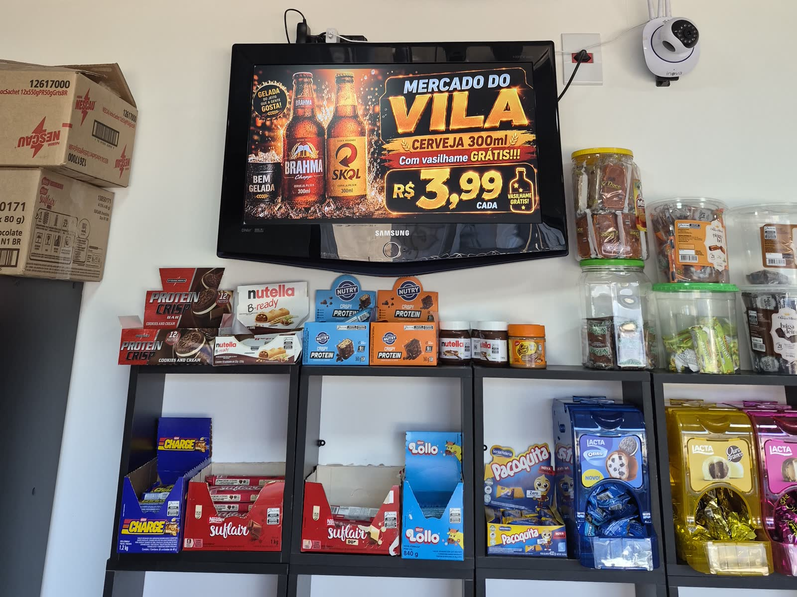

A promoção entra antes de você chegar
Na prática: quinta à noite você sobe o vídeo da promoção no painel. Na manhã seguinte ele já está rodando na TV da loja, sem ninguém precisar ir até o ponto.
Na loja autônoma, a tela é quem recebe, apresenta e lembra. Você publica no painel da Box AI e a TV da loja mostra, mesmo que você esteja longe.
Peça sua proposta
Quatro situações do dia a dia de quem opera loja autônoma, com o que a Box AI já faz hoje.
Na prática: quinta à noite você sobe o vídeo da promoção no painel. Na manhã seguinte ele já está rodando na TV da loja, sem ninguém precisar ir até o ponto.
Na prática: a loja do bairro mostra o aviso de horário dela e a do centro, a campanha da semana. Cada unidade tem o seu login e as suas TVs.
Na prática: antes de mandar a campanha nova, o painel mostra quais TVs estão conectadas agora e quais ficaram fora do ar.
Na prática: a TV do fundo da loja fica muda e a da entrada toca o vídeo com som. O som é definido TV por TV.
Mídia na TV da loja mais a entrada pelo QR Code do aplicativo e pela leitura facial no terminal instalado no ponto. É o pacote pensado para loja autônoma, e vai com bateria e placa de proteção contra queda de energia.
Conte quantas TVs e quantos pontos você tem. A equipe prepara uma proposta para a sua operação autônoma.